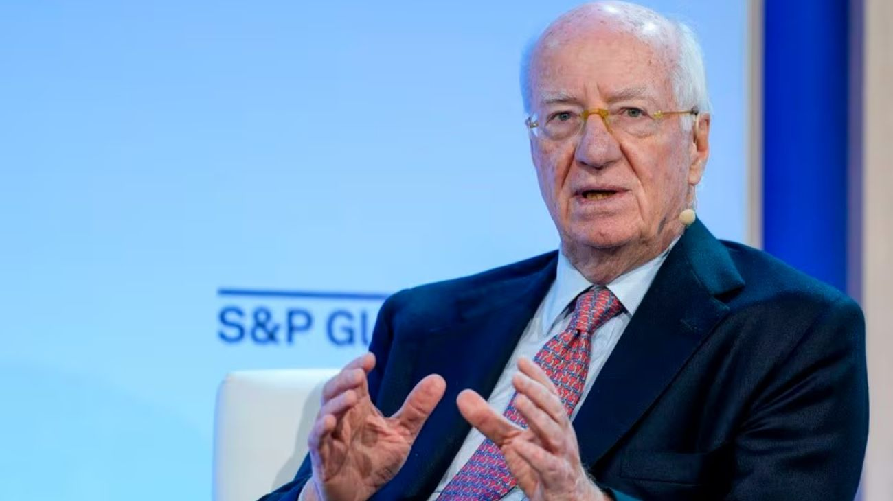

Paolo Rocca deja la conducción operativa de Tenaris: Gabriel Podskubka asume como nuevo CEO del gigante del acero
El empresario más influyente de la industria argentina continuará como presidente del Grupo Techint mientras cede el mando ejecutivo de la empresa tubera líder del mundo a su sucesor de larga data.

Paolo Rocca dejará de ser el CEO de Tenaris, la empresa productora de tubos de acero sin costura controlada por el Grupo Techint que cotiza en las bolsas de Nueva York, Milán y Buenos Aires y es considerada la compañía industrial de origen argentino más relevante del mundo. En su lugar asumirá Gabriel Podskubka, ejecutivo de extensa trayectoria dentro del propio grupo, donde ocupó distintas posiciones de liderazgo operativo a lo largo de los últimos años. Rocca continuará ejerciendo como presidente del Grupo Techint, el holding familiar que controla Tenaris, Ternium, Tecpetrol y otras empresas del conglomerado, manteniendo así la conducción estratégica del grupo pero alejándose de la gestión cotidiana de la principal unidad de negocio.
La transición representa el final de una era. Paolo Rocca asumió la conducción de Tenaris en sus inicios y fue el arquitecto de su transformación desde una empresa de origen argentino hacia una corporación global con operaciones en más de 30 países, plantas en América, Europa, Asia y Medio Oriente, y una capitalización bursátil que la ubica entre las grandes compañías industriales a nivel mundial. Bajo su liderazgo, Tenaris se convirtió en el proveedor de referencia de tubos para la industria petrolera y gasífera global, con una posición especialmente fuerte en el segmento premium para perforaciones en yacimientos no convencionales como Vaca Muerta. La empresa factura más de US$10.000 millones anuales y emplea a decenas de miles de personas en todo el mundo.
Gabriel Podskubka es un ejecutivo formado dentro del propio ecosistema Techint, lo que sugiere que la transición apuntará a la continuidad estratégica más que a un cambio de rumbo. Su designación evita el riesgo de un giro abrupto en la cultura corporativa o en las prioridades de inversión del grupo en un momento en que Tenaris atraviesa una etapa de expansión en mercados clave como el norteamericano y el de Medio Oriente. Además, el cambio se produce en un contexto de alta demanda global de tubos para perforación, impulsada por el auge del petróleo y gas en Estados Unidos, Arabia Saudita y, crecientemente, en Argentina a través de Vaca Muerta, donde Tenaris tiene una posición dominante.
Para Argentina, el cambio en la cúpula de Tenaris no es un dato menor. El Grupo Techint es el mayor empleador industrial privado del país y uno de los actores más relevantes en la cadena de valor energética nacional. Rocca mantuvo históricamente una relación de diálogo con distintas administraciones, y su permanencia como presidente del grupo garantiza que esa interlocución continúe. El cambio en la conducción ejecutiva de Tenaris refleja una tendencia global en las grandes familias empresarias: a medida que los fundadores o líderes históricos avanzan en edad, comienzan a delegar la gestión operativa en ejecutivos profesionales mientras preservan el control estratégico desde posiciones de presidencia o directorio.